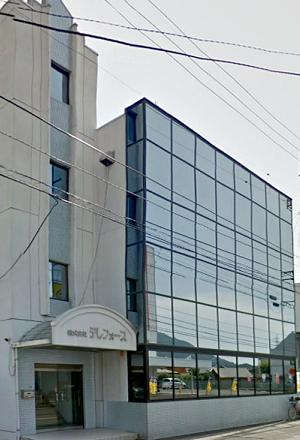

最新技術で社会に貢献する
平成10年に香川県創造活動事業法の認定を取得し、県内で5番目に「香川県ベンチャー企業育成投資支援事業」による投資を受けました。 「仕事の中に遊び心を持つ」こと、それによって新しいアイデアが生まれ、またより楽しく仕事ができる活力ある独立系ベンチャー企業です。 市場ニーズにお応えできる製品開発にエネルギー全開で取り組み続けます。
業務内容
画像処理等に関するハード開発・ソフト開発を主業務とし、データベースソフトやFA制御システム等の開発・製造（アウトソージング）・ 販売をしています。ハード・ソフトの設計から製造(検査外注)・出荷まで主要部分を社内で処理する一貫システムです。
主な開発品目
放送機器（無線IPカメラ、ループレコーダ、マルチビューワ、ネットワークターミナル）、セキュリティー機器（防犯監視システム）など
更新情報
- 2020.6.17
- 製品変更 HC-550/HC-570、 HC-800/HC-801
- 2020.5.28
- 製品追加 TX1300
- 2020.3.31
- 製品追加 GP-2000
- 2020.3.3
- 製品変更・追加 RD1200/1300シリーズ、 HC-700P/701P、 NT-800/NR-800
- 2014-19
- NH-474、 NH-472、 NH-471
- NV-040S/080S/160S、 RX1400/1100
- 寺院管理ソフト お寺さん （新年号登録方法.pdf）